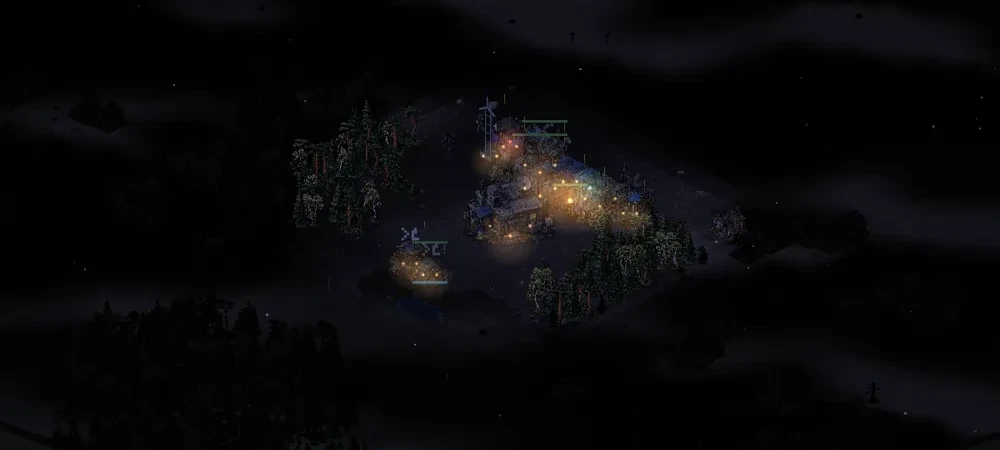

Roadmap
Where Askfält is heading. This is a plan, not a promise: content and order may change as we test, and no dates are set except the iPhone target.
The goal for 3.0
A mobile colony strategy game where physical logistics, expansion and an intelligent Net create the hard choices – without you having to steer every single worker. We make the game deeper by connecting what is already there, not by adding more menus.
Build → carry → refine → expand → automate → defend → strike back → reclaim the Net's technology
Development status on October 28: level 12 can continue through Next into level 13's plunder path with a saved restart. A longer test that has not yet been accepted met the guard and wreck goals but not the cleaning goal. An extra scavenging station in level 9 delivered supplies, while staffing the relay still needs work. Frame pacing has an initial laboratory baseline in a paused mobile view; performance during active play on a real phone remains untested. V3.0 has not been released.
A stable foundation, mobile view and balance
Fixing rough edges, clearer texts, better on small screens and a balance tool that measures the economy, transport and threats.
Roads and logistics 2.0
Roads built with a few taps, a clear price and a logistics view that shows where goods get stuck.
Territory and expansion
The map view of the colony’s border, expansion and defence is complete and verified. These features are included in PWA test version 2.7.0-beta.1.
Defence and combat
Defensive lines, gates, self-defence and clearer drone combat are complete and verified. These features are included in PWA test version 2.7.0-beta.1.
The Net's intelligence
Scout drones, received intelligence and observation-based targeting are complete and verified. Old information can be wrong; private scouting packets must be transmitted. These features are included in PWA test version 2.7.0-beta.1.
A dynamic threat
Dynamic threat, coordinated attacks and the Net pressure panel are included in the web/PWA 2.7.0-beta.1. Final checks and independent review are complete. The published PWA remains 2.7.0-beta.1; this is not a new stable release.
Enemies, robots and salvage
Five enemy roles, typed wrecks, and repair, reprogramming and salvage jobs are in the development build. Mobile choices, functionality and balance comparisons have been checked and independently reviewed. The v2.8 development work is now integrated. There has been no separate v2.8 release or version bump. The PWA version label remains 2.7.0-beta.1.
Campaign, economy and free play
The development build has four reviewed playtest fixes: level 3 requires a completed workshop instead of a repair, an idle guard robot can relieve a human in a tower or outpost, the Map layers button gives quick display choices, and wrecks have clearer graphics. These fixes are not yet in the published web/PWA version.
On one test map, level 11 and both paths in level 12 have been completed with normal and short days in separate reviewed cases using normal player actions. Saving, loading and restarting have been tested in a mobile viewport. Level 13 has now also been completed in a reviewed case on the test map, using the help path from level 12 and normal days, in just under 54 minutes. Level 4 has also been completed in a reviewed case with normal days in just over seven minutes, with three attacks repelled and no buildings lost. Level 5 has been completed in a separate reviewed case in just under a minute, with two original wrecks restored and a robot guarding the tower. Level 6 has been completed in a reviewed case in just under three minutes, meeting the trade and population goals through normal exchanges, housing and recruitment. Both cases use the test map and normal days. Level 8 has also been completed in just over seven minutes in a separate reviewed case on the test map, with all 14 original residents surviving and no buildings lost. Level 10 has also been completed in a separate reviewed case at the start of day 8, with all original residents surviving. Starting, saving, loading and restarting the expedition base have been tested internally. In a separate ten-minute test, the depot’s steel reached the bunker and the food and water chains continued through night and dawn. Starting, saving, loading and restarting have now also been tested internally on mobile and desktop, with both display modes. It is still not a menu option. Two separate twenty-minute supply tests on the test map preserved all eight people present at the start and every building. Kits were produced and installed, and an experienced worker produced steel that was delivered to the bunker. One test tries an extra water cost as an internal recipe experiment; this is not a change to the game rules. Broader campaign and balance checks remain.
The free-play menu is complete in the development branch, with New colony and Damaged workshop options, a map code and a save slot. The Only the Net checkbox disables the rival colony’s tribute and raids, as well as expeditions and infiltrators. The trading post still exchanges 5 wood for 2 parts, and the Net’s threats and normal events remain. The starting scenario, map, day length and Only the Net setting are preserved when saving, loading and restarting. The setting has been tested both on and off in a mobile viewport.
The development candidate now also has attack frequency and starting stock options for New colony. Attack frequency can be Low, Normal or High and changes the intervals between the Net’s attack attempts. The time of the first attempt and enemy health and damage are unchanged. Starting stock can be Limited, Standard or Generous: 14/16/4, 20/24/8 or 28/32/12 scrap/wood/parts respectively. Other starting goods are unchanged. Both options can be combined with Only the Net. Damaged workshop uses Normal and Standard. Loading preserves the current stock; restarting restores the chosen starting stock. Game starts, saving, loading, restarting and the mobile menu have been tested. These options have not been published in the PWA.
Saving and restarting have also been tested for the abandoned roads and besieged colony scenarios. In one food test, an extra farm met the food goal for a larger colony; food balance remains under review. A besieged colony has now sustained its supply chains and tower defense in one 20-minute test. Lower and higher attack frequencies have also been tested; these options are not yet available in the PWA. The published PWA is still 2.7.0-beta.1 and the latest stable version is 2.3. The new starting options and Only the Net setting have not been published.
Level 7 has now been completed in a separate reviewed test on the test map with normal days, in just over 30 minutes. Ten steel produced in the colony reached the bunker, all 13 original residents survived, and no buildings were lost. In level 9, a replacement farm has been built at the ordinary cost, staffed and used to deliver food to the bunker. In a separate reviewed test, the relay’s full construction cost was delivered, the relay was completed and transmission reached about 72% before the relay was lost. A complete playthrough of level 9 using normal player actions remains to be verified. For the final level’s plunder path, the inherited starting stock was previously verified through saving, loading and restarting. In one separately reviewed test covering an hour of game time, 13 humans remained at the end, four robot wrecks had been restored and the guard goal was met. Cleaning reached 8 of 40 tiles and the core remained. The test did not reach a natural victory. These changes are not yet in the published web/PWA version.
A newer test delivered six units of steel produced in the colony to the bunker in level 9. The relay was completed, but transmission reached about 57% before it was lost; the third solar panel was still missing. In the plunder path of level 13, the guard goal was met and four wrecks were restored, but cleaning stopped at 8 of 40 tiles and the core remained. V2.9.0-beta.1 is now available in internal TestFlight. Campaign and balance work continues, along with checking normal progression from level 11 through level 12 to 13.
The whole and the finish
Work has begun on the campaign menu, Next button and starts for levels 11–13. Local tests show that the previous state survives if the transition from level 10 to 11 is cancelled or fails. The candidate in the draft pull request has passed all 301 local tests. A natural victory in level 12 followed by Next to level 13 and saving for wear, decay and the road's construction phases have passed targeted tests. The previous planning pass now preserves the identity and order of active units. A stale grid neighbor after direct removal or a reused ID can no longer push before the next planning pass. A controlled chain from road construction through scouting, wrecks and salvage to bunker delivery matched the random sequence and phase for 345 steps and the final state. Besieged Colony has passed targeted start, save, load and restart checks with historical saves: 12 of 12 cases with 120-second days and 12 of 12 with 240-second days. Sustained defence in an ordinary playthrough has not been shown. New level 12 diagnostics capture the victory dialog and mission state at an intermittent timeout; the underlying cause is unknown. In a separate level 9 test, completed relay 1005 was last present at 1658.65 seconds with 5 HP and first missing at 1658.70 seconds. A combat event shows an enemy striking the relay for 5 damage, reducing its 5 HP to zero and destroying it before removal. The cause is established for this particular seed; the third solar panel was absent and no natural victory was reached. General replay checks, natural victories in level 9 and on the plunder path of level 13, and mobile performance remain. V3.0 has not been released. The goal is a cohesive release with interface, art, sound and performance on real phones.
In parallel: apps
iPhone and iPad
After version 2.3, v2.9.0-beta.1 is now also available to internal TestFlight testers. The target is the App Store on November 1, 2026, subject to testing and Apple's review. The web version stays.
Android
Planned after the iPhone app, with the same game and saves on the phone.
After 3.0: multiplayer
When 3.0 is done and tested, work begins on playing together. The idea is 2–4 players on the same map with the Net as a common enemy – together against the Net or against each other – and in free play computer-controlled colonies can fill empty slots.
- Invite with a code or a QR code.
- Matches can be paused and resumed later, even from another device.
- If a player leaves, a careful computer helper can keep the colony running – production, food, repairs and defence – until the player returns.
- Everything you play alone still works offline and without an account.
- Prototype – two devices see the same world.
- Lobby and invites – create a match and invite with a code.
- A shared match – build, produce and transport at the same time without the worlds drifting apart.
- Pause and resume – saved matches that can be continued.
- Absent players – the computer helper takes over until you are back.
- More players and modes – co-op, versus and teams.
- Playtesting – on real mobile networks before anything is released.
Multiplayer requires the game to talk to a server. The privacy policy will be updated before anything like that is released.
Last updated October 28, 2026 · latest PWA test version: 2.7.0-beta.1 · latest stable version: 2.3. See the devlog for the test version’s contents and earlier releases.